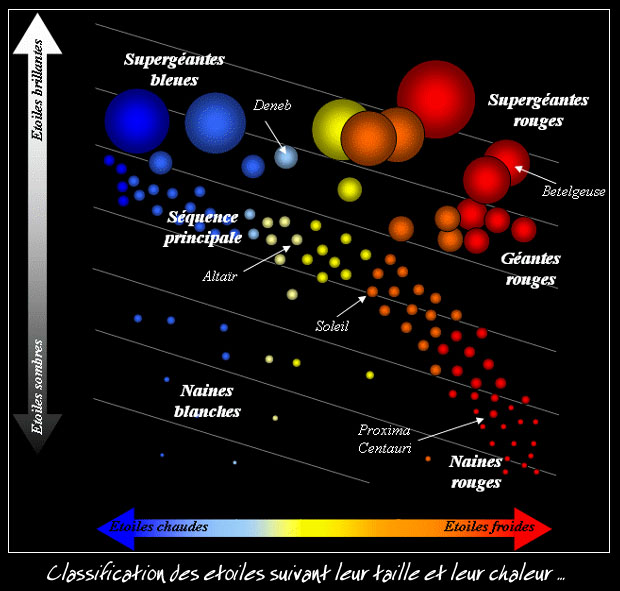

🌟 Mon Blog sur l'Espace 🌟
Bienvenue sur mon blog ! Ici, tu vas apprendre plein de choses incroyables sur l'univers. L'univers a environ 13,8 milliards d'années , il est immense et en constante expansion ! On y trouve surtout deux gaz : l'hydrogène et l'hélium. Mais sais-tu que dans le vide de l'espace, il y a aussi des poussières, des rayons cosmiques, des astéroïdes, des comètes, et même de mystérieuses ondes invisibles ? 🚀

✨ Les Étoiles ✨
Une étoile naît dans un immense nuage de gaz et de poussières appelé nébuleuse. Lorsque ce nuage s'effondre sous sa propre gravité, il chauffe très fort, jusq'à former une boule brillante : c'est la naissance d'une étoile ! 🌌
Les étoiles sont principalement composées de gaz, surtout d'hydrogène et d'hélium. Au cœur d'une étoile, il fait très chaud, plusieurs millions de degrés, ce qui lui permet de briller !
🔎 Quelques étoiles célèbres :
- Soleil : l’étoile de notre Système solaire.
- Sirius : l'une des étoiles les plus brillantes visibles dans notre ciel nocturne.
- Bételgeuse : une géante rouge très grosse située dans la constellation d'Orion.
- Pollux : une étoile brillante visible dans la constellation des Gémeaux.
Les étoiles peuvent avoir différentes couleurs selon leur température : 🔵 les bleues sont très chaudes et très jeunes, tandis que 🔴 les rouges sont plus froides et plus âgées.
Notre Soleil est une étoile jaune, de taille moyenne, et âgée d'environ 4,6 milliards d'années !
« Nous sommes tous faits de poussière d'étoiles. » - Carl Sagan
🪐 Les Planètes 🪐
Une planète se forme autour d'une étoile à partir de poussières, de roches et de gaz qui tournent autour. Petit à petit, ces éléments s'agglomèrent pour former des planètes. 🌌
Dans notre Système solaire, il y a 8 planètes qui tournent autour du Soleil. On distingue deux grands types :
- Planètes telluriques (faites de roches) : Mercure, Vénus, la Terre et Mars.
- Planètes gazeuses (géantes de gaz) : Jupiter, Saturne, Uranus et Neptune.
🌍 Planètes telluriques :
Elles sont faites principalement de roches et de métaux. Elles possèdent une surface solide, parfois une atmosphère (comme la Terre), et parfois un champ magnétique qui protège des rayonnements dangereux du Soleil.
💨 Planètes gazeuses :
Elles sont énormes et composées principalement de gaz comme l'hydrogène et l'hélium. Elles n'ont pas de surface solide comme la Terre, mais un noyau rocheux caché sous une épaisse couche de gaz. Certaines possèdent de grands champs magnétiques, comme Jupiter, qui protège son environnement.
🚀 Toutes les planètes du Système solaire :
- Mercure : Très proche du Soleil, petite, rocheuse, sans atmosphère véritable.
- Vénus : Planète chaude avec une atmosphère dense, principalement composée de gaz carbonique, nuages épais et toxiques.
- Terre : Notre planète bleue, unique avec beaucoup d'eau liquide, une atmosphère respirable riche en oxygène et un fort champ magnétique.
- Mars : Surnommée « planète rouge », elle possède une fine atmosphère, de la glace aux pôles et pourrait avoir abrité de la vie.
🌀 Planètes gazeuses :
- Jupiter : La plus grande planète, géante gazeuse composée principalement d'hydrogène et d'hélium, avec une énorme tempête appelée « Grande Tache Rouge ».
- Saturne : Connue pour ses magnifiques anneaux composés de glace, de poussières et de roches.
- Uranus : Géante glacée très froide, composée surtout de glace d'eau, d'ammoniac et de méthane, lui donnant une couleur bleutée.
- Neptune : Planète bleue lointaine et très froide, gazeuse également riche en méthane.
🌠 Autres caractéristiques intéressantes :
- Atmosphère : Seules quelques planètes en ont une épaisse (Terre, Vénus, les géantes gazeuses). Elles protègent des météorites, contrôlent la température et permettent parfois la vie.
- Champ magnétique : Certaines planètes (Terre, Jupiter, Saturne...) ont un champ magnétique qui les protège du vent solaire.
« Quelque part, quelque chose d'incroyable attend d'être découvert. » - Carl Sagan
🛰️ Les autres objets du Système solaire 🛰️
En plus des planètes et des étoiles, notre Système solaire regorge d'autres objets fascinants plus petits mais très intéressants !
☄️ Les Astéroïdes ☄️
Les astéroïdes sont des gros morceaux de roche et de métal qui tournent autour du Soleil, principalement entre Mars et Jupiter. On appelle cet endroit la ceinture d'astéroïdes.
- Composition : roches et métaux (fer, nickel).
- Exemples connus : Cérès, Vesta, Ida.
❄️ Les Comètes ❄️
Les comètes sont faites de glace, de poussières et de gaz gelés. Quand elles s'approchent du Soleil, elles chauffent et forment une magnifique queue lumineuse visible depuis la Terre.
- Exemple célèbre : la comète de Halley, visible tous les 76 ans depuis la Terre !
🌙 Les Satellites 🛰️
Un satellite est un objet qui tourne autour d'une planète. La Terre possède la Lune, son satellite naturel. D'autres planètes en ont beaucoup : Jupiter possède au moins 95 satellites connus !
- La Lune (Terre) : satellite naturel de la Terre, sans atmosphère et recouverte de cratères.
- Europe (Jupiter) : recouvert de glace et peut-être un océan d'eau liquide caché sous sa surface.
- Titan (Saturne) : a une atmosphère épaisse et des lacs liquides de méthane à sa surface.
🌑 Planètes naines et Pluton
Il existe aussi des planètes plus petites appelées planètes naines. Pluton est la plus connue.
- Pluton : petite planète glacée très éloignée, possédant une fine atmosphère.
- Cérès : située dans la ceinture d'astéroïdes, composée principalement de roche et de glace.
🌌 Objets célestes extraordinaires 🌌
L'univers cache de nombreux objets incroyables, étranges et fascinants. Voici quelques-uns des plus étonnants !
🕳️ Les Trous noirs 🕳️
Un trou noir est une région de l'espace où la gravité est si forte que même la lumière ne peut pas s'échapper ! Il se forme lorsqu'une étoile très massive meurt.
- Exemple : Sagittarius A*, le trou noir géant au centre de notre galaxie (la Voie Lactée).
🌠 Pulsars et Quasars 💫
- Pulsar : C’est une étoile morte qui tourne très vite sur elle-même et envoie des signaux lumineux réguliers. Exemple notable : le pulsar du Crabe.
- Quasar : Objet très lumineux et puissant, situé très loin, alimenté par un énorme trou noir. Il émet une très forte lumière visible à travers tout l'univers.
✨ Les étoiles spéciales : Naines blanches et géantes rouges ✨
- Naine blanche : Petite étoile très dense qui est ce qu'il reste après la mort d'une étoile comme notre Soleil.
- Géante rouge : Étoile très grosse en fin de vie, très brillante, comme Bételgeuse dans Orion.
🌫️ Les Nébuleuses 🌌
Les nébuleuses (ou nébuleuses) sont de grands nuages colorés composés de gaz et de poussières, où naissent les étoiles.
- Nébuleuse d’Orion : visible facilement depuis la Terre, c'est un endroit où naissent de nombreuses étoiles.
🌌 Les Galaxies 🌌
Une galaxie est un ensemble de milliards d'étoiles, de gaz et de poussières. Il existe plusieurs types de galaxies :
- Galaxie Spirale : comme notre galaxie, la Voie Lactée.
- Galaxie Elliptique : de forme ovale, sans bras visibles.
- Galaxie Irrégulière : sans forme précise, comme les nuages de Magellan.
🪐 Les planètes orphelines 🌑
Les planètes orphelines sont des planètes qui ne tournent pas autour d'une étoile. Elles errent seules dans l'espace !
🚀 Quelques exemples fascinants :
- Trou noir supermassif : Sagittarius A*, situé au centre de notre galaxie.
- Quasar très lumineux : 3C 273, l'un des plus brillants connus.
- Pulsar célèbre : Pulsar du Crabe, situé dans la nébuleuse du Crabe.
Pour en savoir plus, visite : Vikidia - Espace